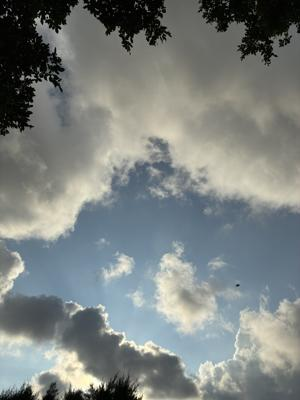
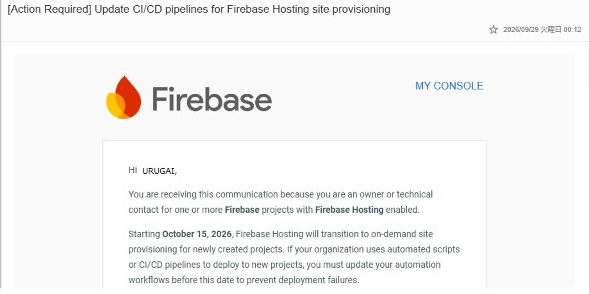
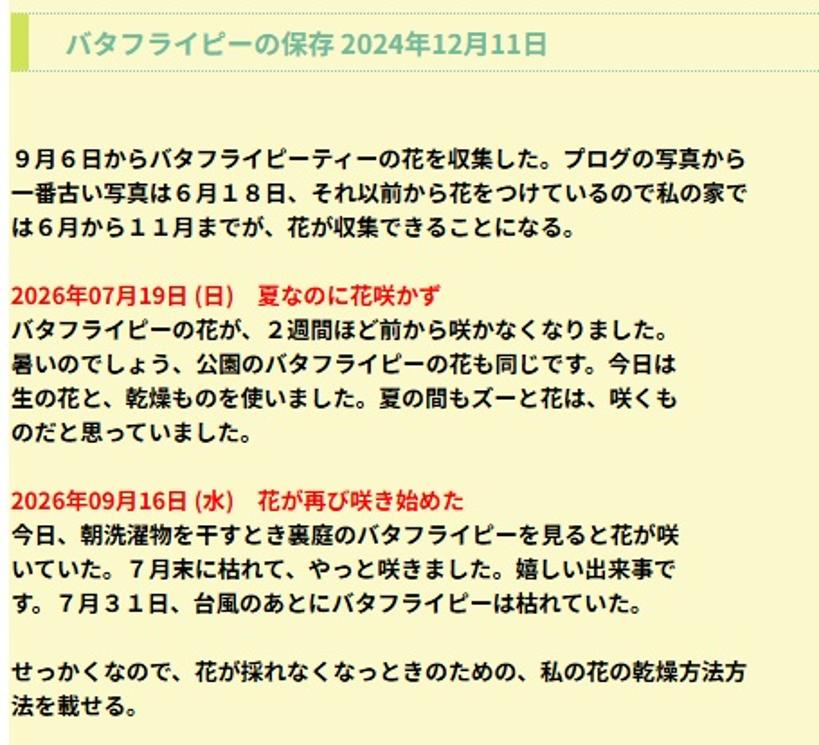

うるがいの話 ある日
最新: Firebaseのトラブル【うるがいの話 ある日】とは 一日だけのプログです
『うるがいの話』の最新一日だけのプログで、通信料が少なく経済的だ。カニの画像をクリックすると全ての日付が載る『うるがいの話』サイトを表示します
|
|
【うるがいの話】 うるがい(ｳﾙｶﾞｲ urugai)とは、『もずくがに』の名前でとても大きくなります。 |
|---|---|
|
|
【カミマヤーの話】 猫のことを方言でマヤーといいます。カミマヤー（kamimayaa）とは、神の猫のことです。 |
|
【たながぁの音楽】 たながぁ（ﾀﾅｶﾞｰ tanagaa）とは手長えびのことで、何種類かあり大きいのは車 エビぐらいになります。 |

|
【ぶながぁの話】 ぶながぁ(ﾌﾞﾅｶﾞｰ bunagaa)とは、赤い髪の毛、赤い身体、そして身長は１ｍ２０ｃｍ ぐらい、川の蟹を食べているの目撃された。場所は沖縄県国頭郡大宜味村のと ある村僕の隣近所に住んでいる爺さんから、聞いた話です。 |
|
|
【ギーマの話】 ギーマ(giima)とは、山原の里山に咲くスズランに似た、 花を付けます。実は食べられます、 気が付くと口の周りが紫になっています。 |
2026年09月30日 (水）Firebaseのトラブル
15:15

Firebaseは、Googleが提供するクラウドベースのアプリ開発プ
ラットフォームです。
お勉強のため、無料のファイアベースを利用して『ギーマの話
』（２０２１年９月から）というウェブサイトを作っているの
ですが、おととい（２０２６年９月２７日）から、
Error: An unexpected error has occurred.
とエラー（予期せぬ障害）になりました。環境を最新にしても
ダメでした。ところが、ファイアベースからメールが来ました
。お！、障害の件か

違いました、
２０２６年１０月１５日より、新規作成されるプロジェクトに
おいて、Ｆｉｒｅｂａｓｅ Ｈｏｓｔｉｎｇは、「オンデマン
ドでのサイトプロビジョニング」方式に移行します。
何やら、手順が変わるらしい。ま、『ギーマの話』は２０２６
年８月１１日からヤフー検索の一覧で出なくなったしと諦めて
いたが、ダメもとで環境を最新したら、動きました。
npm install -g firebase-tools のコマンドを実行した
ついでに、バタフライピーの記述の訂正があったので直しまし
た。

なお、『ギーマの話』のリンクは、やめました。そのうちリン
ク先を変える予定です。
普通の市井の人は、何を書いているのかチンプンカンプンだろ
うな・・・。